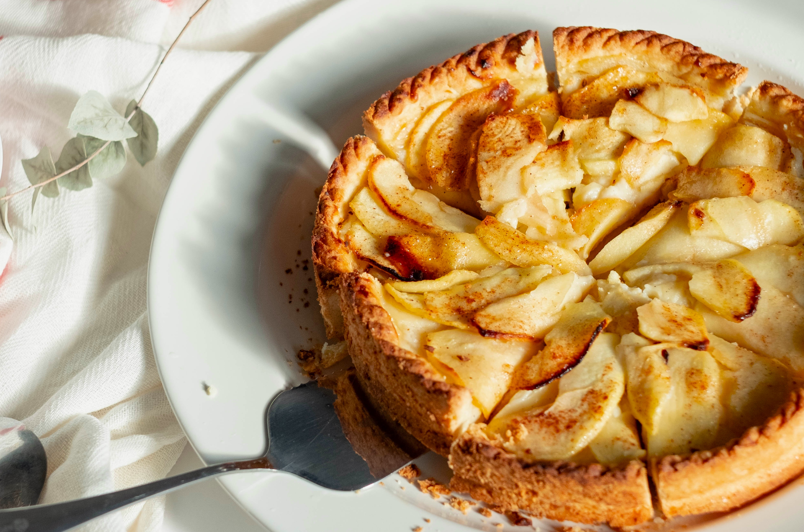
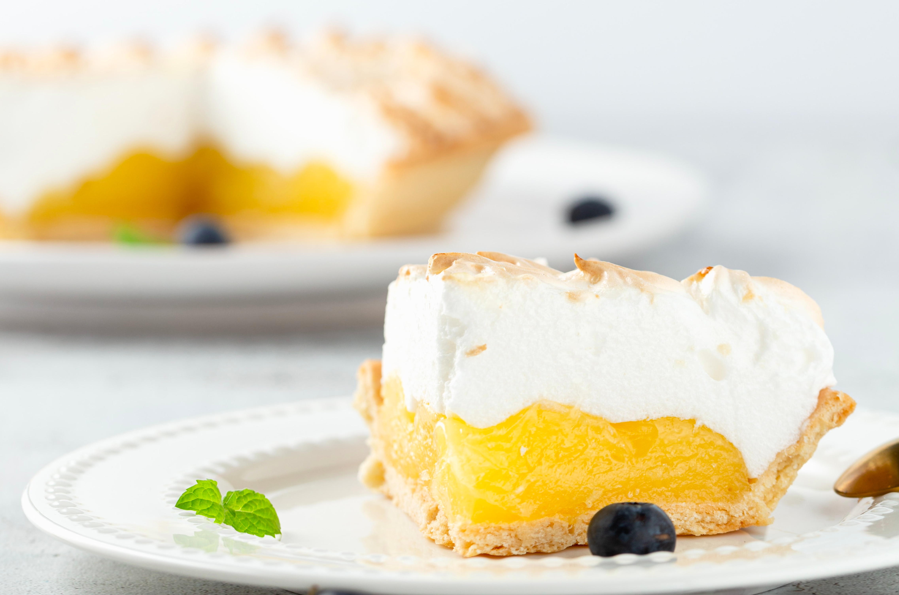
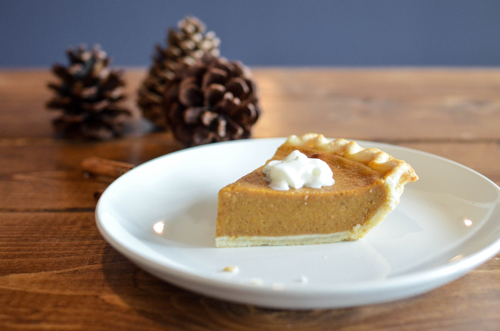

Apple Pie
Serves 8 | Prep time 40 minutes (plus chilling) | Cook time 45 minutes

Ingredients
Pastry
2 cups (250g, 8oz) plain flour
½ cup (60g, 2oz) self-raising flour
pinch of salt
185g (6oz) butter, chilled and chopped coarsely
⅓ cup (70g, 2½ oz) caster sugar
2 eggs, beaten
1 tbsp iced water
1 tbsp milk
caster sugar, to sprinkle
Filling
45g (1½ oz) butter
½ cup (110g, 4oz) caster sugar
8 large apples, peeled and chopped
1 tsp ground cinnamon
¼ tsp ground cloves
Method
- To make the pastry, sift together both the flours and salt with a large mesh sieve into a bowl. Rub the butter into the mixture with your fingertips until a crumbly mixture forms. Add one of the beaten eggs to the iced water and add to the mixture along with the caster sugar. Mix until well combined.
- Bring the dough together with your hands and form a ball. Divide it into 2 pieces, one should be slightly bigger than the other. Wrap them in plastic wrap and let them rest in the fridge for 30 minutes.
- To make the filling, heat the butter and sugar in a large saucepan over a medium heat. Add the rest of the filling ingredients once the butter has melted and cook for about 10 minutes or until the apples have softened. Let it cool.
- Preheat the oven to 180oC (350oF, Gas Mark 4). Grease a 30cm (12 inch) shallow pie dish. You can do this by rubbing the sides in vegetable oil or butter with a paper towel or a pastry brush.
- Take the larger ball of pastry out and roll it out on a lightly floured surface such as a silicone mat, into a circular shape large enough to line the pie dish. Wrap the pastry sheet around the rolling pin and unroll it over the tin. Gently ease the pastry sheet into the tin and allow any excess to hang over the rim of the dish.
- Pour the apple filling into the pie dish and level it out. Add the milk to the reserved beaten egg and brush the egg wash around the rim of the pastry. Then take the smaller ball of pastry out and roll it out large enough to cover the top of the dish. Press lightly at the sides to fix the pastry in place. Trim the excess pastry with a sharp knife and let it rest in the fridge for 30 minutes.
- Brush the top of the pie with remaining egg wash and sprinkle with caster sugar. Using a knife, cut a cross in the centre of the pie to allow excess heat to escape, then bake for 45 minutes or until golden. Let it cool slightly before serving.
Lemon Meringue Tart
|
Pumpkin Pie
|
Back to Top
Lemon Meringue Tart
Serves 10 | Prep time 45 minutes (plus chilling) | Cook time 30 minutes

Ingredients
Pastry
1¾ cups (215g, 7oz) plain flour
1 tbsp icing sugar
140g (5oz) butter, chilled and chopped coarsely
1 egg yolk
2 tbsp iced water
Filling
½ cup (75g, 3oz) cornflour
1½ cups (330g, 12oz) caster sugar
½ cup (125ml, 4fl oz) lemon juice
1¼ cups (310ml, 10fl oz) water
2 tsp lemon rind, finely grated
80g (3oz) butter, chopped coarsely
3 eggs, separated
Method
- To make the pastry, rub the butter into the flour and icing sugar with your fingertips until a crumbly mixture forms. Add the egg yolk and iced water and mix until the ingredients come together to form a dough.
- Transfer the dough onto a lightly floured surface such as a silicone mat and knead the dough gently until it is smooth. To knead, just push it down and out with the heels of your hands. Then fold the dough over in half toward you, rotate about 45 degrees and repeat. If the dough gets sticky, sprinkle a bit of flour over it.
- Shape the dough into a ball and wrap it in plastic wrap. Let it rest in the fridge for 30 minutes.
- Grease a 24cm (9½ inch) springform fluted flan tin. You can do this by rubbing the sides in vegetable oil or butter with a paper towel or a pastry brush.
- Take the dough out and roll it out into a circular shape large enough to line the prepared tin. Wrap the pastry sheet around the rolling pin and unroll it over the tin. Gently ease the pastry sheet into the tin and trim the excess with a sharp knife. Cover with plastic wrap and let it rest in the fridge for a further 30 minutes.
- Preheat the oven to 200oC (390oF, Gas Mark 6). Take the pastry tin out and prick some holes in the base with a fork. Blind bake for 15 minutes. This can be done by placing some greaseproof paper over the base of the case and filling it with baking weights. It helps the case keep its shape and avoid it from shrinking away from the edges of the tin.
- Remove the paper and weights from the pastry case and bake for a further 10 minutes until golden brown. Set it aside to cool in the tin.
- To make the filling, combine the cornflour and 1 cup (220g, 8oz) of the caster sugar in a medium saucepan over a medium heat. Gradually add the lemon juice and water and stir until smooth. Continue heating this mixture over a high heat until it boils and thickens.
- Reduce to a low heat and let it simmer. Continue stirring for 1 minute and then remove from the heat. Stir in the lemon rind and butter, then quickly add the egg yolks (from the 3 separated eggs). This must be done quickly or the yolks will start to 'cook' in the warm mixture. Set aside to cool for 10 minutes.
- Spoon the filling into the pastry case evenly. Cover with plastic wrap to prevent a skin from forming over the top and refrigerate for 2 hours.
- Preheat the oven to 220oC (430oF, Gas Mark 7).
- To make the meringue, beat the remaining egg whites (from the 3 separated eggs) with an electric mixer until soft peaks form. Slowly add in the remaining ½ cup (110g, 4oz) of caster sugar and continue beating until the sugar dissolves. The meringue should have stiff peaks and a glossy texture.
- Spread the meringue over the lemon filling, either by spooning it out or piping it, and bake for 2 minutes or until the meringue is golden brown. Let it cool slightly before serving.
Apple Pie
|
Pumpkin Pie
|
Back to Top
Pumpkin Pie
Serves 8 | Prep time 40 minutes | Cook time 40 minutes

Ingredients
Pastry
3 cups (375g, 12oz) plain flour
1 tsp salt
220g (8oz) butter, chilled and chopped coarsely
½ cup (125ml, 4fl oz) iced water
Filling
2¼ cups (500g, 1lb 2oz) pumpkin, cooked and mashed
1 x 400g (14oz) can of evaporated milk
2 eggs, beaten
1¼ cups (195g, 6½ oz) packed brown sugar
½ tsp ground cinnamon
½ tsp ground ginger
½ tsp ground nutmeg
½ tsp salt
whipped cream, to serve
Method
- Preheat the oven to 200oC (390oF, Gas Mark 6). Grease a 20cm (8 inch) glass pie dish. You can do this by rubbing the sides in vegetable oil or butter with a paper towel or a pastry brush.
- To make the pastry, rub the butter into the flour and salt with your fingertips until a crumbly mixture forms. Gradually add the iced water and mix until the dough holds together.
- Shape the pastry into a ball and roll it out on a lightly floured surface such as a silicone mat, to a thickness of about 5mm (¼ inch). Wrap the pastry sheet around the rolling pin and unroll it over the tin. Gently ease the pastry sheet into the tin and trim the excess with a sharp knife.
- To make the filling, add all the filling ingredients to a separate bowl and beat until well combined with an electric mixer set to a medium speed. Spoon the filling into the pie dish and bake for 40 minutes or until a skewer comes out clean when inserted.
- Let it cool slightly before serving with whipped cream.
Apple Pie
|
Lemon Meringue Tart
|
Back to Top